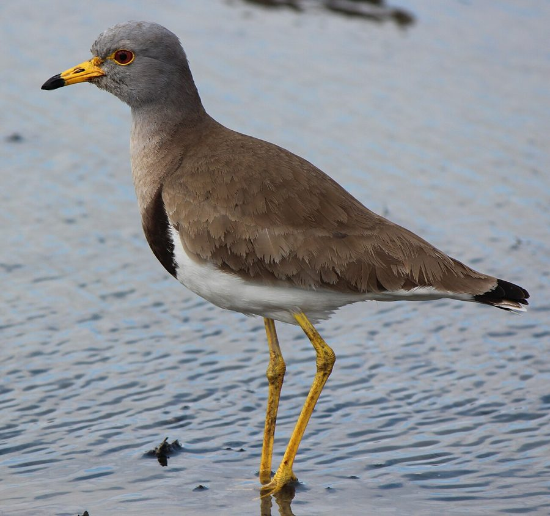

ग्रे-हेडेड लैपविंगGrey-headed Lapwing
Vanellus cinereus · Charadriidae · BRD-0135

- Scientific name वैज्ञानिक नाम
- Vanellus cinereus (Blyth, 1842)
- Family कुल
- Charadriidae
- Hindi हिंदी
- ग्रे-हेडेड लैपविंग
- Local names स्थानीय नाम
- grey headed lapwing, grey-headed lapwing, gray headed lapwing, lapwing
- Status here यहाँ की स्थिति
- native
- Movement आवागमन
- Winter visitor
- IUCN IUCN
- LC
- Review समीक्षा
- audited and independently read
When to look कब देखें
Winter visitor शीतकालीन प्रवासी. Expected mainly in August, September, October, November, December, January, February, March, April, May. मुख्यतः अगस्त, सितंबर, अक्टूबर, नवंबर, दिसंबर, जनवरी, फ़रवरी, मार्च, अप्रैल, मई में अपेक्षित।
Arrives in August–September from breeding grounds in Central Asia; departs by April–May. Expected on mudflats, flood plains, and grasslands of eastern UP. Documented in Ayodhya wetlands surveys. All migrants and visitors →
Uses and possibilities उपयोग और संभावनाएँ
Drawn from the documented uses in the profile below, where each is labelled traditional, current or a research lead. All uses →
Tell it apart from इनसे अलग पहचानें
ग्रे-हेडेड लैपविंग / Grey-headed Lapwing
Vanellus cinereus (Blyth, 1842) — Charadriidae
ग्रे-हेडेड लैपविंग — मध्य एशिया से सर्दियों में आने वाली एक मध्यम आकार की लपविंग। इसका स्लेटी-भूरा सिर और सफेद पेट इसे तुरंत पहचान देते हैं। पूर्वी उत्तर प्रदेश में अगस्त से मई तक यह खुली घास के मैदानों, दलदलों और खेतों में देखी जाती है। इसकी तीक्ष्ण आवाज़ और उड़ते समय के काले-सफेद पंखों की पैटर्न इसे आसानी से पहचानने योग्य बनाते हैं।
Quick Identification त्वरित पहचान
| Feature | Description |
|---|---|
| Size | Medium lapwing; 30–35 cm long |
| Head | Slate-grey crown and face; white cheeks |
| Back | Greenish-brown; glossy in breeding plumage |
| Underparts | White or cream breast and belly |
| Legs | Long, yellowish-green; set under rear of body |
| Bill | Medium, slightly drooped, dark with yellow base |
| Wings | Black and white pattern in flight; white wing-coverts |
| Behaviour | Walks and runs on ground; vocal; wary |
Field tip: A medium-sized lapwing with a distinctive slate-grey head and white face. The yellowish-green legs and white-breasted appearance separate it from other lapwings. In flight, shows striking black and white wing pattern. Very vocal with a distinctive wailing call.
हिंदी — कैसे पहचानें:
मध्यम आकार की लपविंग; स्लेटी सिर।
सफेद पेट; हरी-पीली टाँगें।
उड़ते समय काले-सफेद पंख।
बहुत तीक्ष्ण आवाज़ निकालता है।
Morphology आकारिकी
Biometrics:
| Measurement | Range |
|---|---|
| Total length | 300–350 mm |
| Wing | 200–230 mm |
| Tail | 100–120 mm |
| Bill | 22–28 mm |
| Tarsus | 40–50 mm |
| Weight | 135–200 g |
Size: 30–35 cm long; wingspan 63–75 cm.
Head: Slate-grey or greenish-grey crown, face, and nape. Lores and ear-coverts white. White supercilium and stripe below eye. Face and cheeks white.
Back and wings: Olive-greenish above. Wing coverts and upper back glossy green in breeding season, duller in winter. Primary coverts and flight feathers black. White on wing coverts visible in flight.
Underparts: White breast; white or pale buff belly. Under tail-coverts white or buff.
Bill: Medium length, slightly drooped, dark grey-black with yellow base; slightly flattened at tip.
Legs and feet: Long, yellowish-green to greenish-yellow; long toes for walking in grassland.
Sexes: Males slightly larger and more glossy than females in breeding season.
Vocalisations. Call repertoire:
- Primary call: A distinctive wailing kee-aa or pee-aa, often repeated.
- Alarm call: A sharp pit-pit-pit when defending territory or chicks.
- Flight calls: Wailing and mewing sounds in flight.
हिंदी: तीक्ष्ण की-आ जैसी आवाज़। डर पर पिट-पिट चिल्लाहट।
Behaviour & Ecology व्यवहार और पारिस्थितिकी
Ground forager: Grey-headed Lapwings feed by walking on grassland and mudflats, picking insects from the ground. They feed on:
- Grasshoppers and locusts
- Beetles and ground insects
- Aquatic insects on mudflats
- Small worms and molluscs
Social behaviour: Gregarious, particularly in winter; form flocks of 10–30 or more birds on suitable grasslands. Males territorial during breeding season but tolerate multiple males in non-breeding flocks.
Feeding time: Active throughout the day but peak feeding at dawn and dusk; also feed at night on moonlit nights.
Roost behaviour: Nocturnal roosting on open grasslands or mudflats; gather in loose groups.
Predators: Marsh Harrier, Peregrine Falcon, eagles, and jackals may take adults. Highly aggressive in defence of territories and chicks.
Habitat preference: Open grasslands, cultivated areas, and mudflats; less dependent on water than other plovers.
हिंदी: झुंड में रहने वाली चिड़िया। घास के मैदान में खोज करते हैं। बहुत चिड़चिड़े और लड़ाकू स्वभाव के होते हैं।
Life Cycle / Phenology जीवन चक्र
Winter visitor: Breeds in Central Asia and southern Russia (April–July); absent during breeding season. Returns to eastern UP from August and remains through May.
Arrival and departure: First birds arrive in August; numbers peak in January–February; most depart by April–May.
Courtship: Males display with a series of acrobatic flights over grassland, calling continuously.
Moult: Complete moult occurs before migration. Non-breeding plumage acquired and worn for wintering.
Site fidelity: Some individuals return to the same wintering sites.
हिंदी: अगस्त में आता है, मई तक रहता है। मध्य एशिया में प्रजनन करता है। सर्दियों में झुंड में रहता है।
Host Plants or Prey आहार
| Food Type | Examples | Feeding Behaviour |
|---|---|---|
| Grasshoppers and locusts | Acrididae family | Picked from grass and ground |
| Beetles | Carabidae, Cerambycidae | Ground foraging |
| Aquatic insects | Chironomids, dragonfly nymphs | Picked from mudflats |
| Small worms | Oligochaetes, earthworms | Extracted from soil |
| Molluscs | Small snails, clams | Picked or broken open |
हिंदी: टिड्डियाँ, खटमल और घास पर रहने वाले कीड़े खाता है। सीधे जमीन से चुनकर खाता है।
Predators / Natural Enemies शत्रु
- Avian predators: Marsh Harrier, Peregrine Falcon, jackal
- Mammalian predators: Jackal, wild boar, wild dog
- Parasites: Feather mites, helminths
हिंदी: शिकारी चिड़ियाँ और जंगली जानवर इसका शिकार करते हैं।
Agricultural / Human Relevance कृषि प्रासंगिकता
Protected species: The Grey-headed Lapwing is protected under the Wildlife (Protection) Act 1972 (Schedule IV, amended 2022). Hunting is illegal in India.
Agricultural pest control: Feeds on grasshoppers and locusts in cultivated areas, providing some natural pest control benefit.
Grassland indicator: As a ground-foraging specialist, indicates the presence of open grasslands and grassland-like habitats.
Habitat change: Conversion of grasslands to cultivation and the loss of stubble fields can reduce habitat for wintering flocks.
Cultural value: Recognized by birdwatchers and naturalists as a vocal and distinctive winter visitor.
हिंदी: कानून से पूरी तरह सुरक्षित है। इसका शिकार करना कानूनी रूप से निषिद्ध है।
Expected Locally स्थानीय रूप से अपेक्षित
Not a field record. Written from published accounts for eastern Uttar Pradesh. No confirmed local sighting yet — if you have seen it, that is what the atlas needs.
अभी तक स्थानीय पुष्टि नहीं। यह विवरण प्रकाशित स्रोतों से है, किसी अवलोकन से नहीं।
Winter range: Expected in eastern Uttar Pradesh from August to May on grasslands, mudflats, and cultivated areas. Documented in Ayodhya wetlands surveys (Yashmita-Ulman & Singh, 2022).
Habitat preference: Open grasslands, stubble fields, and mudflats where foraging on ground is possible.
Peak occurrence: January–February, when populations from Central Asian breeding grounds have moved south.
Nearest published record: Recorded in Ayodhya District wetlands by Yashmita-Ulman & Singh (2022) as a winter visitor.
What a first record would be: A dated photograph showing the bird clearly in open grassland or on a mudflat in a specific location (with GPS coordinates and date) submitted through the About page of this atlas. The distinctive grey head and black-and-white wing pattern are diagnostic.
हिंदी: यह पक्षी स्थानीय रूप से अपेक्षित है, न कि देखे गए बतौर प्रेक्षण। अगस्त से मई तक खुली घास के मैदान में देखे जा सकते हैं। पहला रिकॉर्ड के लिए स्पष्ट फोटोग्राफ चाहिए।
Distribution वितरण
Global range: Breeds from Black Sea eastward to eastern Siberia and Japan. Winters across Asia from Middle East to Philippines and Australia. Monotypic species.
In India: Distributed as a winter visitor across the Indian subcontinent, particularly in open grasslands and wetlands.
In Uttar Pradesh: Winter visitor to grasslands and wetland margins, particularly in the eastern districts.
In Basti district / eastern UP: Regular winter visitor to grasslands and flood plains, documented in Ayodhya wetlands surveys.
Research Questions शोध प्रश्न
- What are the precise breeding grounds of the Grey-headed Lapwing populations that winter in eastern UP?
- क्या इस चिड़िया की आबादी पिछले दस सालों में बदली है?
- How does the diet composition of Grey-headed Lapwing change between early winter (August–November) and late winter (February–May)?
- क्या किसान जिस तरह से खेतों में पराली जलाते हैं, उससे इस चिड़िया के आवास में कमी आई है?
- What is the population trend of Grey-headed Lapwing in eastern UP grasslands and paddy fields? (A child can count lapwings at the same field through the season.)
- How do artificial wetlands and restored grasslands compare to natural grasslands in supporting wintering lapwing flocks?
Similar Species मिलती-जुलती प्रजातियाँ
| Species | Key Difference | Hindi | Field Rule | |
|---|---|---|---|---|
| [[yellow_wattled_lapwing\ | Yellow-wattled Lapwing]] (Vanellus malabaricus) | Smaller; yellow wattles at base of bill; resident; lacks grey head | ज़र्दी टिटहरी | Yellow-wattled is smaller and has yellow wattles (lacking in Grey-headed). Resident, not a winter visitor. |
| Common Lapwing (Vanellus vanellus) | Vagrant; larger; crested head; glossy green back | यूरोपीय टिटहरी | Common Lapwing has a crest, glossy green back, and white face (not grey-headed). |
Field rule: Grey-headed Lapwing is distinguished by its slate-grey head, white cheeks, and black-and-white wing pattern in flight. The yellowish-green legs and wailing call are also diagnostic.
Taxonomy & Classification वर्गीकरण
Original description. The species was described by Edward Blyth in 1842 as Lobivanellus cinereus. The genus Vanellus encompasses most Asian and some African lapwings.
Subspecies. Monotypic — no subspecies are currently recognised.
Family and order placement. Order Charadriiformes; family Charadriidae. The genus Vanellus is primarily an Asian genus with several species.
Phylogenetic notes. Closely related to other Asian lapwings, particularly the Northern Lapwing (V. vanellus) of Europe.
IUCN status rationale. The species is assessed as Least Concern (LC) globally. Populations are stable and widely distributed across Asia. Adaptable to various grassland and wetland habitats. In India, protected under the Wildlife Protection Act 1972 (Schedule IV).
हिंदी: एशिया में पाया जाता है। भारत में सर्दियों में आता है। कानून से सुरक्षित है।
Photo Gallery फोटो गैलरी
No photos yet — add field photos to media/species/grey_headed_lapwing/ and run node scripts/sync_photos.js.
Wanted photos:
- Non-breeding plumage on grassland
- In flight showing black and white wing pattern
- Walking and foraging behaviour
- Head detail showing grey and white markings
- With other lapwings for comparison
References संदर्भ
- Blyth, E. (1842). Report of Curator of the Museum [extracted from the Journal of the Asiatic Society]. Journal of the Asiatic Society 11: 169–198.
- Ali, S. & Ripley, S. D. (1968). Handbook of the Birds of India and Pakistan. Vol. 2 (Waders to Owls). Oxford University Press, Delhi. Pp. 97–99.
- Grimmett, R., Inskipp, C. & Inskipp, T. (2011). Birds of the Indian Subcontinent (2nd edn). Oxford University Press, Delhi. Pp. 124–125.
- Cramp, S. & Simmons, K. E. L. (1983). Handbook of the Birds of Europe, the Middle East and North Africa: The Birds of the Western Palearctic. Vol. 3 (Waders to Gulls). Oxford University Press. Pp. 12–37.
- Yashmita-Ulman & Singh, M. (2022). Avifaunal diversity in unprotected wetlands of Ayodhya District, Uttar Pradesh, India. Journal of Threatened Taxa 14(8): 21561–21578.
- GBIF Occurrence Data — Vanellus cinereus, India (2024).
Source file: species/fauna/birds/grey_headed_lapwing.md